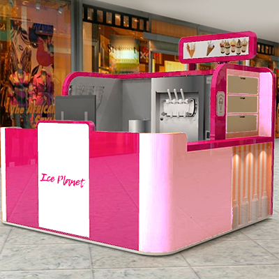

Sobre Nós
Nossa história começou no inicio de 2020, na cidade do Recife, através da pandemia exigir uma necessidade maior do uso de entregas domiciliar.
Somos reconhecidos pelo sabor único de nossos sorvetes, além de não possuir calda, valorizando o sabor natural de nossos produtos.
A loja caiu no gosto da população não só pela qualidade dos seus produtos mas também por suas entregas de altíssima qualidade. O seu sorvete é enviado em embalagens térmicas desenvolvidas para evitar que o mesmo derreta até chegar na casa do cliente.
A Ice Planet é a maior franquia independente direitos exclusivos de possuir, operar e conceder a principal rede de sobremesa rápida.
| Sabores Ofertados | |
|---|---|
| Frutas Tropicais | Outros Sabores |
| Caja | Chocolate |
| Graviola | Chocolate com Brownie |
| Goiaba | Menta |
| Maracujá | Baunilha |
| Açaí | Morango |
